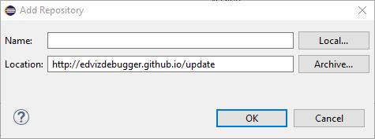

Installation
Prefer videos? We've got you covered! Check out our installation video.
The tool can be installed directly from an update site within Eclipse. To install the tool, the following tasks need to be performed:
-
Open Eclipse, and open the Install New Software dialog.
-
In this dialog, add a new software site to install plug-ins from (or choose the one which you already added, if you are updating the plug-in). In the dialog given below, enter the URL http://n.ethz.ch/~csteimer/update, and optionally give it a name so that you can recognize it again.
 -
It can happen that no plug-ins are shown. There can be two cases: Either you already have the newest version of the tool, in which case you can skip the installation. Otherwise, make sure that the option Group items by category is not checked.
- Choose the plug-in called EDViz and press Next. To through the following dialogs and accept the license as well. Afterwards, a Security Warning might pop up. In that case, just ignore it and press OK. Finally, the plug-in will be installed, and Eclipse will prompt to restart. The tool has been successfully installed.
Features
The DebugTool is an Eclipse-plugin which can be used to debug Java programs. It features a main drawing area of customizable size, where the heap structure as given at breakpoints is laid out on screen. The tool is particularly suited to developing new data structures and small heaps. The following features are a part of the tool:
-
Visual debugging: Instead of clicking through a bunch of values in a list to painfully decide whether the data structure looks correct, the data structure is simply drawn on the screen. This allows much quicker understanding of the correctness of the data structure. It also makes understanding concepts such as aliasing easier - there are simply two edges to the same node.
Before and after:
- General purpose: The tool is not limited to debug only a limited set of programs. Any program can be debugged and visualized with the tool. Ever wondered how a Java HashMap is implemented? Use the tool and visualize it! Almost any data structure can be visualized if configured correctly.
-
New layout algorithm: A new graph layout algorithm is part of the tool. The layout algorithm is particularly suited to data structures and debugging due to two main features.
When developing data structures, there is often a clear notion of ordering. For example, when laying out a binary tree, one certainly wants the left child to be drawn to the left of its sibling. This algorithm takes this into account by allowing user-defined ordering constraints. Therefore the tool is also not limited to a fixed set of pre-defined data structures, but rather new structures can be developed by users and the layout algorithm configured for those structures.
Secondly, the user can use the graph to create a mental map of the entire heap layout. The graph layout algorithm takes previous layouts into account and therefore tries to produce layouts which not only fulfill general graph drawing aesthetics - but also stay temporally consistent where possible.
- Integration with Eclipse: The tool is tightly integrated with the Eclipse IDE. For one, when opened it listens to breakpoints being hit and is therefore usable without any manual linking to Eclipse. The integration goes further, however: Right-clicking values allows to inspect them by using Eclipse's existing inspection capabilities. This makes it much easier to find the correct value to inspect than having to look through the structure in the existing Eclipse user interface.
- Visually appealing design: Using modern visualization frameworks such as D3.js and web frameworks such as Bootstrap, the tool has a modern look and feel. The tool also profits from existing animation capabilities and the strength of SVG editors.
- Configurability: The tool comes with its own configuration file, which allows configuring large parts of it. Furthermore, relying on web frameworks for visualization means that changing the look of the visualization can be done as one is used to - by editing .css files.
- Interactive mode: The interactive mode allows debugging larger heaps than usual. All variables are initially not analyzed. Values need to be specifically expanded to draw larger portions of the heap, allowing you to debug precisely what you want to have debugged. The tool remembers whether values are expanded or not and automatically expands the appropriate values at the next breakpoints.
Usage
Prefer videos? We've got you covered! Check out our getting started video.
EDViz can be used to debug Java programs written in Eclipse. The tool is most suited to simple and small data structures such as linked lists, binary trees or hash maps, however not strictly limited to them. To use the tool to debug Java programs, the following steps are necessary:
- Open the view. This can be done using Window > Show View > Other... > EDViz.
- Set breakpoints as usual.
- It might be necessary to configure the tool for use with your program, for example if you introduce a new data structure which is unknown to the tool.
- Debug the program. At each breakpoint, additionally to the usual Eclipse behavior, the current state of the heap will be shown on screen.
The following is a screenshot of the tool in action, displaying a simple binary tree data structure:
Actions
While debugging a program, various actions can be taken. They are listed at the top of the debug tool. The actions which can be performed can be seen in the below screenshot and are explained here in more detail.
- Reload: Redraws the current graph. Redrawing the graph can be necessary after changing settings to see the effect of the changes.
- Cancel: Becomes active whenever there is a long-running operation which may be cancelled. Heap analysis and graph layout may
- Start / stop interactive mode: Starts or stops interactive mode, depending on whether it is currently active.
- Manage abstractions: The existing abstraction rules can be activated and deactivated.
- ←: Loads the previous graph on screen again, such that changes between two breakpoints can be clearlier investigated.
- →: Loads the subsequent graph on screen again.
- Edit constraints: This action opens an interface, where specifically the ordering constraints section of the configuration may be edited. Changes here can be only applied (such that they are active, but not persisted to file) or saved to file.
- Edit abstractions: This action opens an interface, where specifically the abstractions section of the configuration may be edited.
- Edit string formats: This action opens an interface, where specifically the string formats section of the configuration may be edited.
- Edit blacklist: This action opens an interface, where specifically the blacklist section of the configuration may be edited.
- Settings: Opens a settings dialog where the most important settings can be changed. Some of these settings are applied immediately, while others require the view to be re-opened. Applying the settings reloads the view if a restart is required by any of the settings. Manually reloading the view to apply any setting is never necessary.
- Manual: Opens this manual in a browser window within the tool.
- Fix bugs: A beta feature which can automatically fix certain bugs. If the beta mode is not active, then this action will not be available.
- Load configuration: Instead of the default configuration file, you may optionally specify a different configuration file to load. The configuration file may also be reset to use the default configuration file again. This action also shows you the location of the default configuration file if you need to manually edit, as long as no other configuration file is loaded. To finish loading a configuration, reload the view by using the Reload button to reload the view.
Configuration
The config.json file in the plugin folder allows to configure various things. The following options can be configured directly in the file. The more important options are available in the settings dialog, or through one of the different editors for ordering constraints, string formats, blacklist or abstraction rules. If changes are made directly to the file, Eclipse will need to be restarted for them to take effect. Changes made with the different dialogs are applied immediately. Editing the configuration file directly should only be performed by expert users.
Optionally, you may specify another configuration file to use through the Load configuration action. This allows you to have multiple configuration files and swap between them, for example to test certain behavior without destroying the original configuration file. The Load configuration action also shows you the default location of the configuration file.
- constraints: Ordering, positioning and cycle-removal constraints. The positioning and cycle-removal constraints need to be adapted only in rare cases. See the ordering constraints section for a more in-depth look at ordering constraints.
- toStringFormats: See the string formats section.
- abstractions: See the abstractions section.
- blacklist: "See the blacklist section.
- graphDrawer: Allows to choose how the graphs are drawn on screen. browser is the default and most supported value. The other values should mainly be used if issues with the browser version occur. swt draws the graph within a Canvas in the same space, while swing draws the graph in a separate window.
- analyzeStatic: false is the default value. If set to false, then static fields will be ignored by the tool. If set to true, static fields will be handled in the same way as instance fields.
- letterWidth: Describes the width of a single letter for the layout phase. The larger the value, the wider the box around a value in the graph will be. Note however, that all boxes will be compressed if the total width can't fit on screen. This should be set together with the font attributes.
- width: The width of the drawing area on screen in pixels.
- height: The height of the drawing area on screen in pixels.
- isBeta: If set to true, then beta features will be activated.
-
fontInfo: Allows setting various attributes with regard to the font used. The following attributes exist here:
- fontName: The name of the font to be used. This name is written in the font-file to be used and must match it, otherwise the default system font will be used.
- swtFontSize: The size of the font used in SWT components. This generally should be around 30% lower than swingFontSize, which is the size of the font used in Swing components.
- fontFile: The name of the file located in debugtool/fonts from where the font should be loaded.
-
colors: Allows setting the colors of the different types of values and variables in the drawing area differently from the default colors. This setting is not required.
-
array: Color of array values. All colors shall be given in the format #RRGGBB in the usual hexadecimal format. Default color: #BAB1AE
-
object: Color of usual Java values. Default color: #F4F1BB
-
primitive: Color of primitive values. Default color: #E6CCBE
-
null: Color of null values. Default color: #ED6A5A
-
variable: Color of variables. Default color: #C7E8F3
-
array: Color of array values. All colors shall be given in the format #RRGGBB in the usual hexadecimal format. Default color:
- quadProgSolver: The solver to use for the on-screen layout. This should generally not need to be changed, as the default joptimizer version is the most efficient and most general version anyway.
- languageFile: The language file as located in debugtool/languages which should be used. Note that this should better be changed with the change language action.
- interactiveMode: If set to true, the tool will start up in interactive mode. The mode can also be changed while the tool is running, this just changes the start-up option.
- debug: If set to true, additional debug output will be generated in debugtool/.debug. Default value is false and should only be changed if debug output must be supplied to fix bugs in the tool.
Ordering constraints
The ordering constraints are stored in the configuration under constraints > queries in the form of an array of constraints. They can easily be edited using the edit constraints action. These constraints decide on the horizontal ordering of the values displayed in the graph on screen.
Right-clicking on values with two or more fields allows an ordering constraint to be added directly for that value's type, as an easier alternative. That option can be found in the context menu under Rules → Write order constraint for type X, where X will be replaced by the value's actual type. There is no semantic difference between an ordering constraint added that or any other way, it's just a simplification of the process.
Each of the constraints has three parameters. These parameters are the following:
-
query: Based on the query it is decided on which values to apply the ordering constraint. Generally, each query can match zero, one or multiple values. The query can have one of two forms:
- typeName.something: Here, typeName refers to some Java type, and something dereferences some fields from that type. something can dereference multiple fields in a row, e.g. f1.f2 or also be empty. Then the matching values will be anything dereferenced by something of all the values of the given Java type. Note that Java types which are contained in packages must have the dots in their names replaced by /. This means that e.g. java.util.String must be converted to java/util/String.
- variableName.something: Here, variableName refers to the name of a variable in the program, and something works the same way as given above, by being dereferenced on the variable's value.
- quantifier: The quantifier decides to which of the values matched by the query the ordering constraint should be applied. Currently there is only one quantifier: all, which applies the ordering constraint to all values matched by the query.
-
order: The left-to-right order in which the fields of the matched values should be drawn. The order is applied to each matched value separately. In the order, fields of the matched values can be used. Generally, all matched values should have the same type and therefore the same fields. Some examples:
- (f1)<(f2): For each matched value, field f1 should be ordered to the left of field f2.
- (f1.y)<(f2.x): For each matched value, field y of the value in field f1 should be ordered to the left of field x of the value in field f2.
- (f1.recurse(f1))<(f2.recurse(f2)): The recurse function is special: It recursively follows the field or fields given as arguments and therefore resolves to multiple values. For example, f1.recurse(f1) leads to f1, f1.f1, f1.f1.f1 and so on. Multiple fields may also be followed: f1.recurse((f1|f2)) leads to f1, f1.f1, f1.f2, f1.f1.f1, f1.f1.f2 and so on. All fields of a value may be followed with f1.recurse(*).
- (i)<(i+1): If you end the query part with i to refer to all children of an array, this allows to order the children of an array in their natural order.
Examples
Assume that you have the following BinaryTree class in your code:
package binary;
class BinaryTree<T> {
BinaryTree<T> left, right;
T value;
...
}
As usual, you want left to be drawn to the left of right for all binary tree elements. Then you should add the following ordering constraint. Note that the recurse(*) here ensures that the entire left subtree is drawn to the left of the entire right subtree. If you omitted the recurse(*), then each left sibling would be drawn to the left of its right sibling, but there would be no guarantees about the entire subtree. Also note that we call the type binary/BinaryTree<T>, we use the fully qualified name, but replacing dots with /.
{
"query": "binary/BinaryTree<T>",
"quantifier": "all",
"ordering": "(left.recurse(*))<(right.recurse(*))"
}
Assume now that you have two variables in your program, root1 and root2. To order root1 horizontally left of root2, add the following ordering constraint. The variables are root items, just as the types are, therefore the query is left empty.
{
"quantifier": "all",
"ordering": "(root1)<(root2)"
}
For the last example, assume that the variable root1 is of type BinaryTree<T>. To order only the children of that specific variable, and not all children for that type, add the following ordering constraint:
{
"query": "root1",
"quantifier": "all",
"ordering": "(left)<(right)"
}
Let's assume we have the ArrayList as given in the abstraction examples. To order the elements in their natural order, use the following constraints:
{
"query": "ArrayList.elements.i",
"quantifier": "all",
"order": "(i)<(i+1)"
}
String formats
The string formats are stored in the configuration under toStringFormats in the form of an array of string formats. They can easily be edited using the edit string formats action. Based on these string formats, the text to display within a value in the graph on screen is decided.
Right-clicking on a value will present some options for setting the string format of the value. Under Rules → Set format of type X to {f} you may set the format of all values of type X to show the value of their field f as a default option. If the default formats are not sufficient, you may choose Rules → Write format for type X to write your own format for all values of the given type X.
Each of the formats has three parameters. These parameters are the following:
- query and quantifier: These are the same as in the ordering constraints.
- format: Based on the format, it is decided how the text to display will look like. The format is a special string which allows for formatting based on field values: {f} will be replaced with the value of the field f in the values matched by the query and quantifier. Outside of {}, the string is left as-is. For example, applying {key}:{value} to a value with fields key = Hello and value = 2 will lead to the string Hello:2.
If no format is applied to a value, their value by default will be as follows:
- For primitives, the primitive value is converted to a string.
- For arrays, they are converted to elementTypeName[]. Arrays with a limited number of primitive values can also be converted to [v1,v2,v3] where vi are the values in the array.
- For objects, the format {value} is applied. If the object doesn't have a field value, then it is converted to the value's type name.
Note: Cascading formats are currently not supported. Assume you have a structure A → B → C. Setting the format for type A to {b} and the format of type B to {c} will not show the value of C for the value A. To achieve such an effect, the format of A should be {b.c} instead.
Examples
Assume that you have the BinaryTree class as given in the ordering example. Then the following format will use the value field as the string to display. Note that we prefix the actual value with value:.
{
"query": "binary/BinaryTree<T>,
"quantifier": "all",
"format": "value:{value}"
}
The string to be displayed can also be hardcoded. For example, to display every left field of a tree as left, use the following format:
{
"query": "binary/BinaryTree<T>.left,
"quantifier": "all",
"format": "left"
}
Now assume that you have the following Entry class:
class Entry {
int key,value;
...
}
You can use multiple fields in the format. The following format will use both fields to generate an intuitive string describing the contents of the entry:
{
"query": "Entry",
"quantifier": "all",
"format": "{key}:{value}"
}
Instead of type names you may also use variable names for the query. Then the format will simply be only applied to the value pointed to by the variable, and not to all values of some type. Dereferences both in the query and in the formats.
Abstraction rules
The abstraction rules are stored in the configuration under abstractions in the form of an array of abstraction rules. They can easily be edited using the edit abstractions action. Based on these rules, multiple values may be abstracted to a single value, allowing to save space on screen and draw larger heaps.
Each of the rules has five parameters. These parameters are the following:
- query and quantifier:These are the same as in the ordering constraints.
-
comparison: The comparison to compare the values matched by the query and quantifier with. Multiple comparisons may be specified by separating them with a comma and putting each comparison into normal brackets. A comparison can be of one of the following forms. Note that the query may be replaced by *, this then corresponds to all fields. The query has the same semantics as the query given above, with the all quantifier.
- query: This is equal to query==*.
- query==v: This compares the value at query to the value v. v may take some special values: primitive checks whether the value is of a primitive type and null whether it is null. Comparing to * always returns true. Instead of query, also * may be used, which refers to all fields of the value and will therefore compare all fields of the value to v and return the ones that match. Using this allows to refer to the current value instead of any field of it. If v should have spaces, it must be enclosed in "": query=="With spaces".
- query!=v: This is true iff query==v is false.
- count: This denotes the minimal number of values which the query has to match in order for the abstraction rule to be applied. Setting this to 1 will ensure that the abstraction will always be applied.
- active: If set to false, this abstraction rule will be disabled. This allows to easily deactivate abstraction rules without having to delete them.
Examples
Let's assume you have some class ArrayList as given below:
class ArrayList {
Object[] elements;
ArrayList() {
elements = new Object[100];
}
...
}
This class has an obvious problem when trying to display it with the tool. The elements array has 100 elements, which will not fit on even a very large screen. However, for small programs, it's likely that this array will be mainly filled with null elements. These elements can be abstracted to a single element without really losing any information. The following rule will abstract them to one node, as long as there are at least five of them:
{
"query": "ArrayList.elements",
"quantifier": "all",
"comparison": *==null",
"count": 5
}
Let's assume we have two somewhat strange classes as given below:
class Class1 {
Class2 next;
...
}
class Class2 {
Class1 next;
...
}
We can now for example abstract any pair of Class1 → Class2 objects in order to reduce the height of the heap. We can do this with the rule given below. Note that we don't add any equalities to the comparison, as we want to abstract them together regardless of their value. As we specify multiple comparisons, we must separate them by a comma and wrap them in brackets. If we started the query at Class2, we would be abstracting Class2 → Class1 pairs, which is slightly different.
{
"query": "Class1",
"quantifier": "all",
"comparison": "(this),(next)",
"count": 1
}
Blacklist
The blacklist rules are stored in the configuration under blackList in the form of an array of blacklist rules. They can easily be edited using the edit blacklist action. Based on these rules, values and variables may be blacklisted, meaning that they won't appear in the graph on screen.
Right-clicking on a value also shows options for blacklist rules to be added. Choose Rules → Blacklist field v of type X to blacklist all fields v of some type X. Instead, you may also blacklist by value: Rules → Blacklist value x will blacklist all values which match the given comparison x. Lastly, you may write your own pre-filled blacklist query by choosing Rules → Write blacklist for field v of type X to manually write a conditional blacklist for fields v of some type X.
Each of the rules has three parameters. These parameters are the following:
- query and quantifier: These are the same as in the ordering constraints.
- comparison: This is the same as in the abstraction rules.
For each of these rules, the values and variables matching the rules will be resolved, and they will not be shown in the graph. This allows to remove some fields or variables which typically cause visual clutter but are not actually important to debugging, for example the String[] args parameter in Java main methods.
Examples
Assume that you have the BinaryTree class as given in the ordering examples. The value of the tree is usually not drawn as a node, but rather displayed inside the tree node, as we have done already in the string format examples. The following blacklist rule takes care of that:
{
"query": "binary/BinaryTree<T>",
"quantifier": "all",
"comparison": "value"
}
In some cases, the value might actually contain important information, for example if it is not a primitive. To blacklist it only when it is a primitive value, use the following rule:
{
"query": "binary/BinaryTree<T>",
"quantifier": "all",
"comparison": "value==primitive"
}
When debugging a Java main method, there is always a String[] args variable. In many cases, this is not needed. To blacklist that variable, the following rule can be used. The comparison here is optional. If set, the variable is only blacklisted if it contains a primitive value. If no comparison is given, then the variable is always blacklisted.
{
"query": "args",
"quantifier": "all",
<optional>("comparison": "this==primitive")
}
For Experts
The above examples and descriptions are informal and meant for new users. They cover the most important cases but don't precisely explain the semantics or syntax behind the different options. For a formal description of the semantics and syntax, curious users may take a look at the domain-specific language document: dsl.pdf
Beta features
Beta features are still in development and can not be considered stable. There are no guarantees for their further development. Therefore, using beta features requires some small additional setup. In the configuration, set the isBeta flag to true and restart Eclipse. Afterwards, beta features will be activated.
BugFixer
Using the BugFixer prototype, the tool can automatically fix a limited set of bugs in your code. To activate it, select the fix bugs action. You may either start the prototype before debugging anything, or already debug a program, correct the graph manually, and then invoke the BugFixer. Once invoked, the following steps will need to be performed:
Initialization
- Select project: Select the project within which the classes are contained which need to be fixed. The project must be opened in Eclipse.
- Select classes: Select the classes which contain the code you want to have fixed. Note: You must select all classes which are used. For example, if you want to fix a bug in some class package1.Class1 and that file imports a class package2.Class2, then you must also select the second class. If it uses (but doesn't import as they are in the same package) a class package1.Class3, you must also select this third class.
- Select methods: Select the methods which you think might potentially be buggy. All the methods from the previously selected classes are visible here. Generally, the less methods you pick, the faster your bug will be found. Therefore, try to select as few methods as possible here. The methods which are not selected here will not be analyzed.
-
Select main method: Select the main method, which is the entry point to your program. As such, a main method must satisfy certain criteria. These criteria are checked before populating the selection, therefore any method which may be selected here satisfies them:
- The method must be public.
- The method must be static, or be located in a class with a public and empty constructor.
- The method must have a single argument, and that argument must be an array. Currently supported element types for the array are Integer, int and String, however this may change in future releases.
- The method must return a value.
-
Select rewrite rules: In the last step, you must select the rewrite rules with which the BugFixer attempts to fix your bugs. Instead of directly choosing the rules, you may also choose a bug description, if one applies to your problem. Currently the following rewrite rules are available:
- Method and loop counters: Always select this. This avoids the program running into infinite loops, which may be introduced by rewriting.
- Rewrite loop-exit conditions: If the tool finds a for-loop with an exit condition using the <= operator, it attempts to replace it with a < operator.
-
Change loop-initialization: If the tool finds a for-loop where a variable is initialized to 0 or 1, then it also uses the other value. Note that one limitation exists: The variable must be declared outside of the loop:
int i;
for (i = 0; ...)will be changed for (int i = 0; ...)
will not be changed -
Add assignments: Adds assignments of the form a.field = b to the code. Adding these assignments has the goal of fixing bugs such as forgetting to assign the value of the next-pointer in a linked list or not setting one of the children in a binary tree. These assignments will only be added under the condition that the declared type of A.field matches the declared type of a. This corresponds to the following code:
class A {
A field;
...
}
A a = ...
A b = ...
a.field = b; -
Switch field accesses: Switches between different field accesses, such as replacing a.left with a.right. Switching between these field accesses has the goal of fixing bugs such as following the wrong subtree or setting values in the wrong subtree in tree structures. The BugFixer switches only between fields of the same declared type. This corresponds to the following code (although left and right could also be fields of another type, as long as they are of the same type):
class A {
A left;
A right;
...
}
A a = ...
a.left = ...
a.right = ...
Fixing Bugs
Once correctly initialized, the BugFixer prototype can start working on fixing your bugs. The work-flow is as follows:
- Input: A new input is given to the system. There are multiple ways to get such an input. It can be given by the user, read from a file or be derived randomly.
- Execute: The different possible versions are executed, to see whether they fix the bugs. Versions which cause errors are immediately discarded, for other versions the next step follows.
- Evaluate: The user must evaluate the different versions as to whether they fix the bugs. Either a faulty model can be edited, or yes-no questions may be answered until a correct version appears. If there are more than one version which lead to the correct result, these steps are repeated. If after a certain number of repetitions there is still more than one version, then the one with the least changes to the code is returned.
Model Editor
As part of the BugFixer prototype, the model editor allows you to edit the graph on screen manually, in order to get a new model with which possibly fixed versions of the code can be compared. The model editor allows many edits to the graph, such that essentially any graph can be created. Note that this only edits the visual structure appearing on screen. It does not make any changes to the underlying heap, meaning that if you continue to the next breakpoint your changes will be lost.
The model editor can be invoked in the graph drawer. Right-click on an empty area and select Edit the model. The available actions can be grouped into three sections:
- Dual-node actions: To invoke dual-node actions, press ⇧ and drag one node onto another. The available actions will then be shown in a pop-up menu.
- Single-node actions: To invoke single-node actions, right-click any node. The available actions will then be shown in a pop-up menu.
- No-node actions: To invoke no-node actions, right-click any empty space. The available actions will then be shown in a pop-up menu.
The following dual-node actions are available:
- Move subtree: Allows to move one subtree to another node. A new name must be given to the new subtree, which may overwrite existing subtrees of the node. Applicable only if the two values are not directly related.
- Move partial subtree: Similar to move subtree, however not all children of the subtree root are moved. The children to move with the subtree must be manually selected.
- Insert copy: Inserts a copy of one value in another. Fields of the value are however not copied with it. A new name must be given of the field from the value to the copy. Applicable to any two values.
- Swap fields: Allows to swap two fields. Applicable only if the two values are siblings. The two fields to swap must come from the same parent. Additionally, the user can choose whether to swap these fields only for the selected nodes or for all nodes of that type.
- Swap values: Swaps the values stored in two nodes. The first value will afterwards store the value of the second and vice versa. Applicable to any two values.
The following single-node actions are available:
- Remove value: Completely removes a value. Removes it as a field from all parents, and removes all of its fields. Its fields will however stay in the graph if they are reachable on another path. If a variable points to the value, the variable is also removed. Applicable to any value.
- Remove from parent: Removes the value as a field of a parent. If the value is reachable on another path, it stays in the graph. Applicable to any value with at least one parent value.
- Insert new value: Allows the creation of a new value, which is then inserted as a field of this value. The name of the field must also be given. The new name may overwrite existing names, in which case one may give a new name to link the new value to the existing field. Applicable to any value or variable.
- Rename field: Allows to select any field of the value and rename it. The new name may overwrite an existing name. Applicable to any value with at least one field.
- Rename variable: Allows to rename a variable. Applicable to any variable.
The following no-node actions is available:
- Insert null values: A utility action which allows to insert multiple null values at once. The values and variables where to insert null as well as the field names must be given.